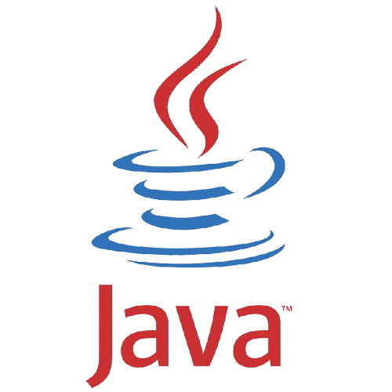
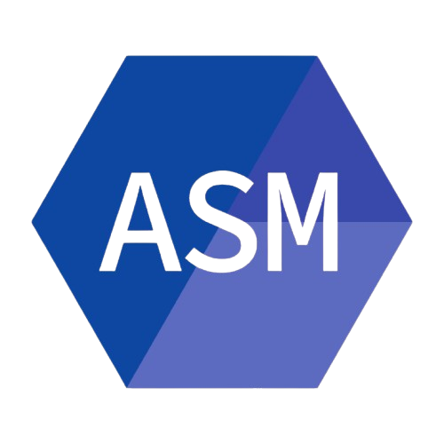
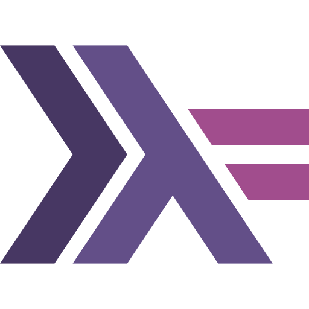
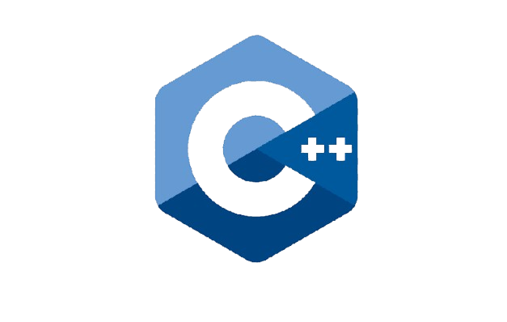
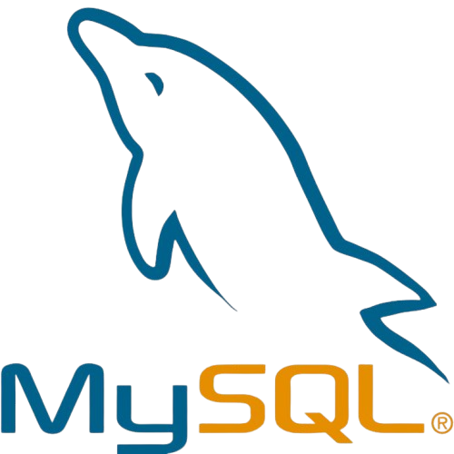

Sobre mí
¡Hola! Soy Jhesica, una estudiante apasionada por la tecnología en la Universidad Mayor de San Simón. Me encanta cómo el código puede transformar ideas en realidad y me motiva cada día a aprender más. Desde programación funcional y POO hasta bajo nivel, pruebas unitarias y trabajo en equipo ágil (Scrum), todo me fascina. Pero lo que realmente me enciende es el mundo de las redes: conectar personas, compartir conocimiento y ver cómo la tecnología une comunidades. Estoy en constante aprendizaje, construyendo proyectos que me desafían y soñando con contribuir a algo más grande. ¿Te animas a charlar de código o colaborar en algo interesante?
Formación Académica
Ingeniería Informática
Universidad Mayor de San Simón
2024 – ActualidadProgramacion en Java
TodoCode Academy
2024 – 2025Redes de Computadoras
NASeros
2026 – ActualidadExperiencia en Equipo
Participación en proyectos académicos bajo metodología Scrum, incluyendo:
- Planificación de sprints
- Definición de historias de usuario
- Modelado UML
- Desarrollo colaborativo
Intereses Profesionales
Proyectos Académicos Destacados
Sistema de Recetas Saludables – Java (TDD)
- Desarrollo bajo metodología TDD (Red-Green-Refactor).
- Implementación de pruebas unitarias con JUnit y Mockito.
- Validación de reglas de negocio y filtrado dinámico por ingredientes.
- Aplicación de principios de diseño orientado a objetos.
Sistema de Gestión de Productos – Assembly x86 (Radasm)
- Desarrollo de aplicación en ensamblador x86 con interfaz básica.
- Implementación de registro y administración de productos.
- Manejo manual de memoria y estructuras de datos.
- Compilación y ejecución en entorno Radasm con uso de OllyDB.
Juego tipo Snake – Assembly 8086 (emu8086)
- Desarrollo completo del juego utilizando ensamblador 8086.
- Implementación de lógica de movimiento en tiempo real.
- Sistema de detección de colisiones y contador dinámico de puntuación.
- Manipulación directa de memoria y renderizado en modo texto.
Habilidades Técnicas

Java
Assembly
Haskell Python
Python

C++
MySQLContáctame
¿Quieres colaborar en algún proyecto o simplemente charlar de código? ¡Escríbeme!